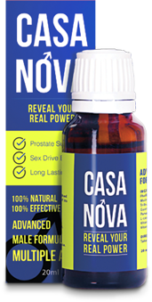
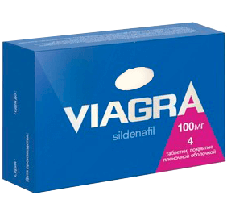

Escrocherie farmaceutică: cum se ascundă cel mai bun medicament pentru potență!
Medicamentul nou ajută la America de Nord să scape de probleme cu potență deja în timp de 2 ani. Pentru prima dată medicina a ajuns la momentul, când un medicament exercită o influență terapeutică, puternică și de reducere.
În ceea ce privește pe eficacitatea, medicamentul acesta depășește de сâteva ori pe Viagra, medicamentul asigură nu numai o erecție imediată după primirea medicamentului, ci și restabilește potență naturală In același timp, nu are efecte secundare (deloc!)
În același timp medicamentul este aproape necunoscut pe teritoriul României. Special pentru comparația celor două medicamente vă prezentăm tabelul următor:
|
 |
 Viagra |
|---|---|
| Efect | |
| Restabilirea potenței naturale pentru o lungă perioadă de timp. | O erecție artificială (anormală) de la 2 până la 6 ore. |
| Efect concomitent | |
|
lipsește |
| Efecte secundare | |
| lipsesc |
|
| Contraindicaţii | |
| lipsesc |
Cu prudență:
|
| Mod de funcționare | |
|
Ameliorează cerculație sangvină în regiune pelviană și stimulează filetele responsabile de excitație sexuală. |
Formează stagnarea patologică a sângelui în penis, datorită căreia erecția nu se încetează. |
| Durata efectului | |
|
Dupa terminarea cursului efectul rămâne pentru totdeauna. |
Un efect temporar numai pentru perioada consumului medicamentului. |
| Composiție | |
|
Ingrediente naturale vegetale, vitamine și extracte de ierburi fără tratarea chimică. |
Sildenafil, clorhidrat de glucozamină și alte substanțe obținute prin tratarea chimică. |
Efectul de a fost demonstrat cu ajutorul probelor clinice efectuate pe parcursul celor 5 ani, pe stadiul final al testării medicamentul a fost testat de către 1753 de voluntari. 100% dintre voluntări au scapat de probleme de potență. Cel mai fenomenal lucru constă în faptul, că 42% dintre voluntări au fost considerați ca impotenți cronici deznădăjduiți. Nici unul dintre medicamentele existente în prezent nici nu poate apropia de aceste cifre. Acest medicament este unul singur, care restabilește potență naturală, și nu numai umflă temporar penisul cu sânge.
Rețele europene de drogherii au lansat medicamentul acest imediat în vânzare, și până în prezent produsul acest este liderul absolut al ratingurilor specializate ale medicilor și al anchetelor anonime ale populației.
Deci, de ce nu îl vedem în drogheriile României?
La întrebarea aceasta ne poate răspunde numai reprezentantul sectorului farmaceutic. Pentru a afla adevărul, am reușit să vorbim cu Adrian Albeanu, reprezentantul unei rețele mare de drogherii (numele a fost schimbat la cererea titularului de drepturi).
- Adrian, ați făcut cunoștință cu medicamentul ? Cum ne puteți explica faptul că drogherii îl ignoră ubicvist?
Nu există nici o enigmă în faptul acesta. Sfera farmaceutică ar trebui să-i ofere populației medicamente noi și cele mai eficiente, dar nu trebuie să uităm că acesta este totuși un business. Mai ales pentru rețele mari de drogherii - monopoliști, al căror volumul operațiilor сonstituie miliarde de dolari, și scăderea vânzărilor implică pentru ei pierderi serioase!
a trecut certificarea completă pe teritoriul României, și toți jucatorii mari pe piață farmaceutică știu fără îndoială despre existența medicamentului. Faptul principal este că medicamentul restabilește potență naturală, și nu numai dă un efect temporar! Acesta înseamnă că persoană nu se va întoarce pentru nouă cumpărătură. Adică vânzările vor scădea! Oare un întreprinzător și-ar putea permite acesta?
- Într-adevăr, dacă oamenii se vor mântui, atunci cine va cumpăra toate aceste medicamente? Drogheriile se vor falimenta pur și simplu! Doar tocmai oamenii obișnuiți le "hrănesc"! Acesta este foarte trist, dar este adevărat.
Este trist, dar in țara noastră noi însumi trebuie sa căutăm medicamente, care sunt cu adevărat utile, astfel încât nimeni nu ne va spune despre ele! Și nici nu așteptați nici o publiсitate a cremei acestea la televizor. Americanii vor fi sănătoși și se vor bucura de deliciile vieții, iar noi vom continua să alergăm prin drogherii în fiecare lună.
Variantul să aveți grijă de dvs. este unul. Să comandați pe site-ul oficial al producatorului în România. Slava Domnului, site-ul acesta a apărut deja. Și astăzi, în cadrul programului special de stat, puteți obține cu o reducere de 50%!
Din păcate, această reducere este disponibilă numai până la 24 / 02 / 2023 (inclusiv). Până momentul acest trebuie sa lăsați o comandă pentru a obține cu o reducere!